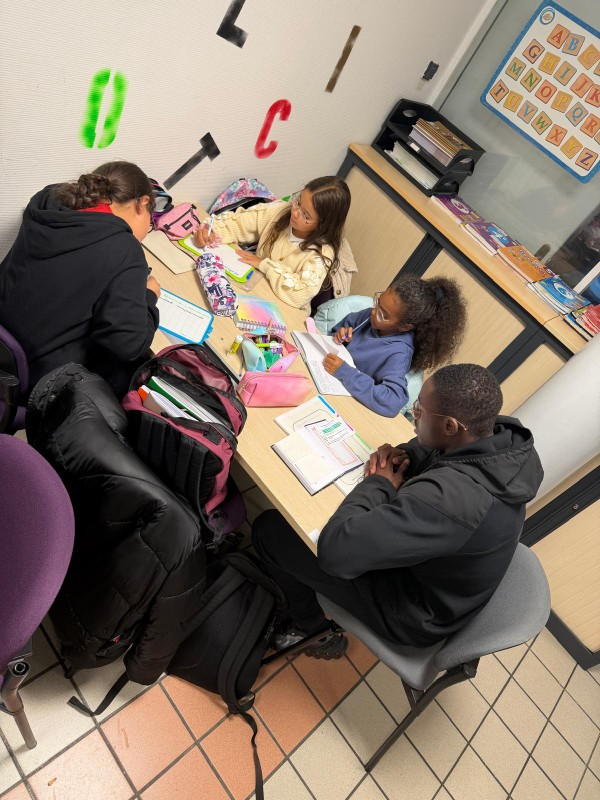

Citoyenneté
Nettoyage du quartier
Une opération de sensibilisation à la protection de l'environnement menée avec les jeunes.
10 juin 2026
Découvrez les dernières activités, événements et projets menés par l'association Double Sens.

Grâce à l'implication de nos bénévoles, les enfants bénéficient d'un accompagnement régulier dans leurs apprentissages et leur développement personnel.
Une opération de sensibilisation à la protection de l'environnement menée avec les jeunes.
10 juin 2026
Une intervention enrichissante permettant aux jeunes de découvrir de nouveaux parcours de vie.
03 juin 2026
Des séances régulières d'aide aux devoirs afin de développer l'autonomie et la confiance.
28 mai 2026